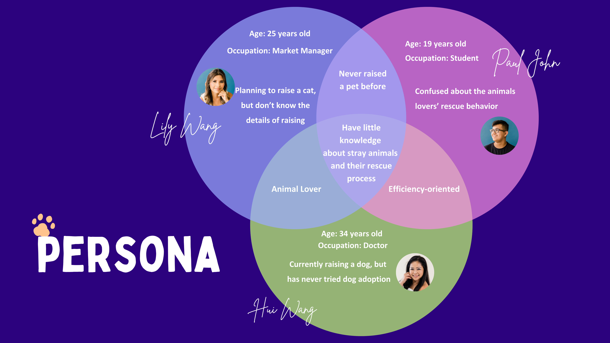
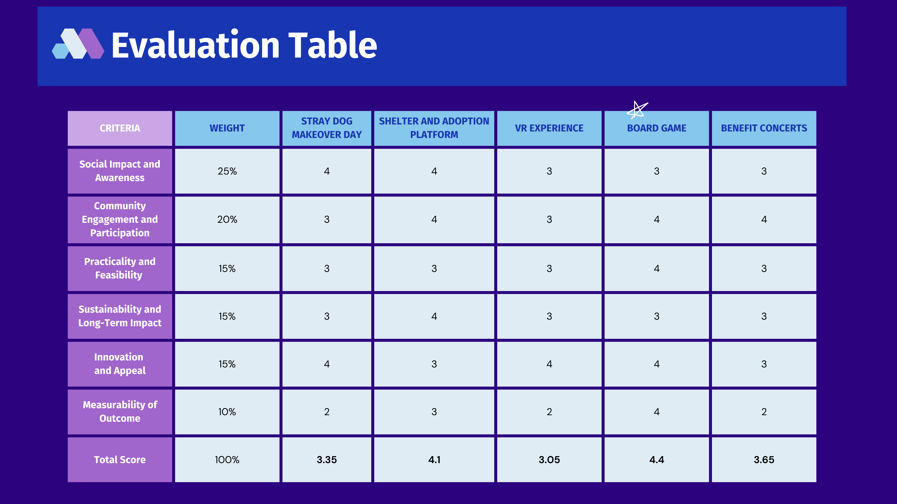
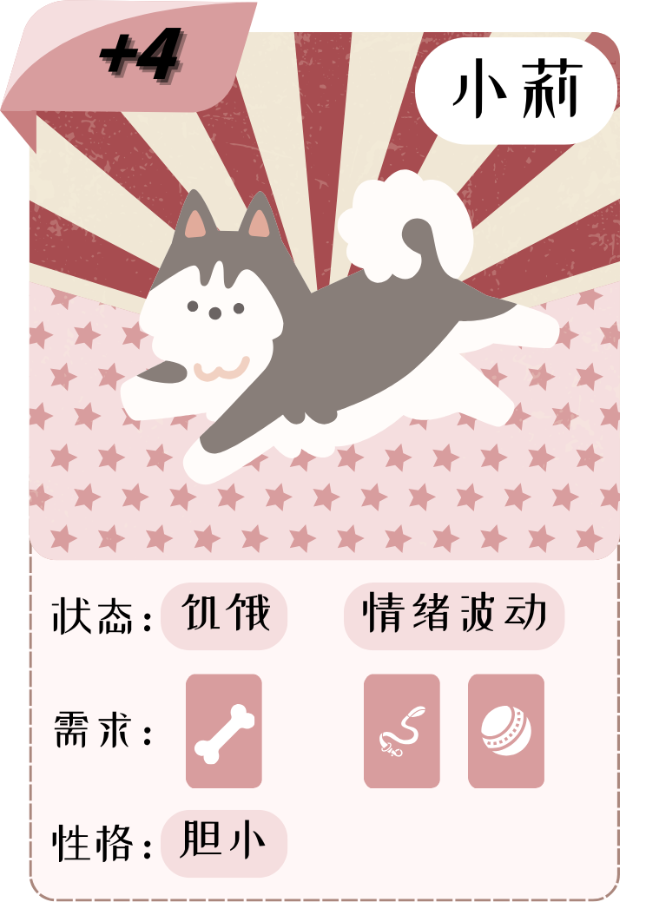
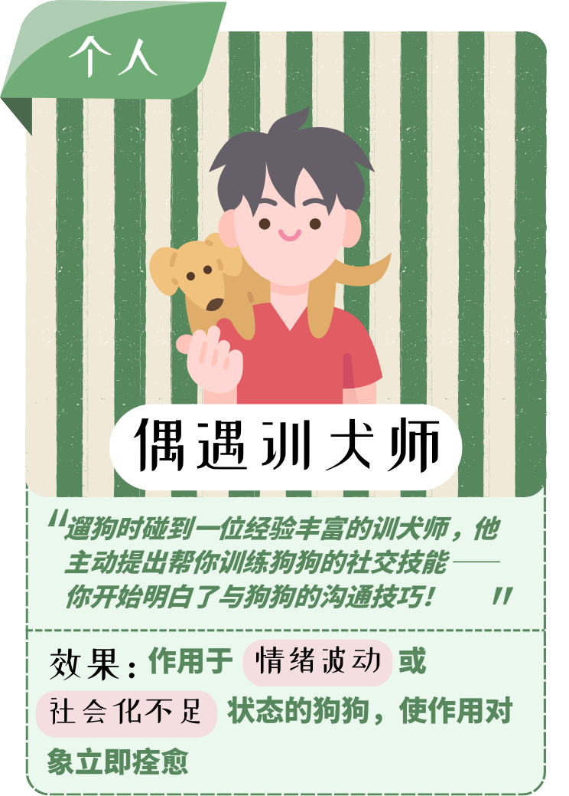
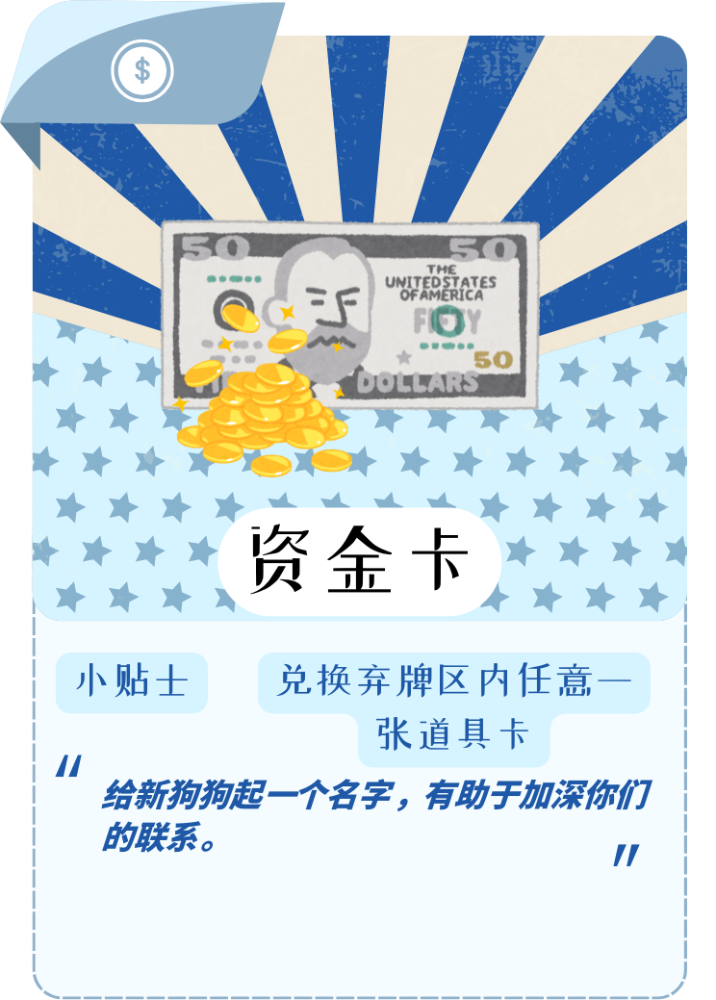
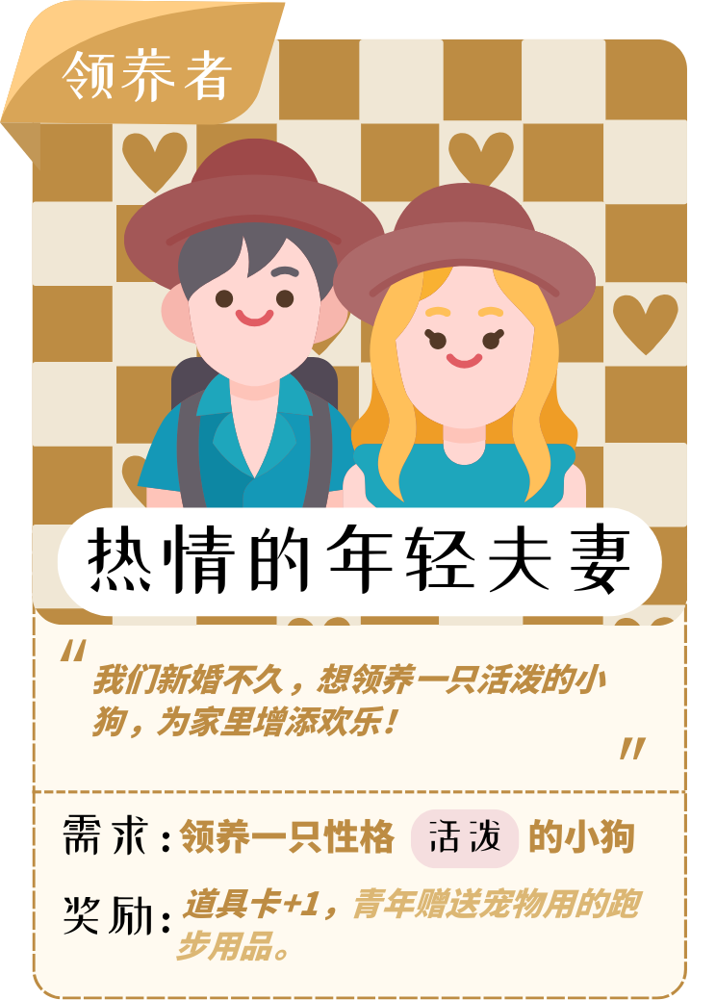
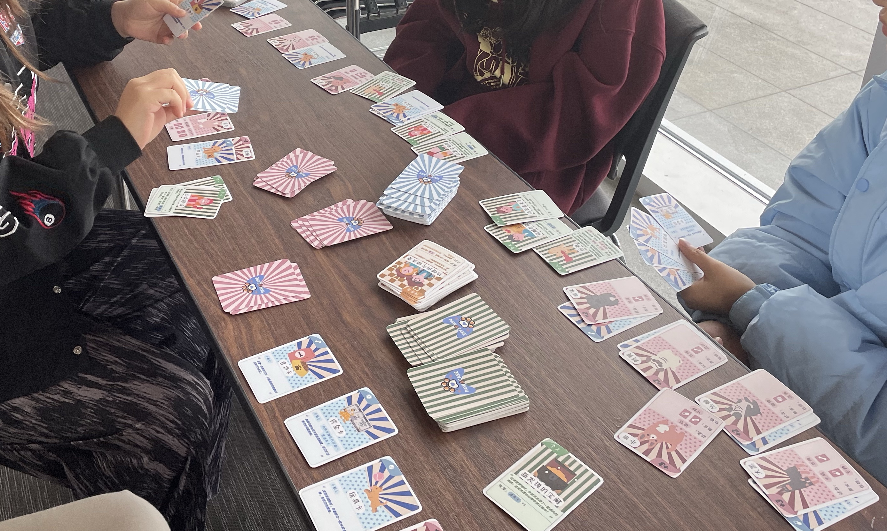

Paw 4 Care
上海每年有数万只流浪狗被收容，但公众对救助过程的认知远低于问题本身的严重程度。我们想做的不是再写一篇呼吁文章，而是让人在玩的过程中自己感受到这件事有多难。
Paw 4 Care 是一款以流浪狗救助为主题的实体卡牌游戏。玩家扮演救助站工作人员，在有限的资源下做出真实的取舍：要先治疗受伤的狗，还是先给饥饿的狗喂食？要送出一只性格胆小的狗给独居老人，还是等一个更合适的家庭？
团队项目 · 与 Zihe Zhou、Xi Rui、Yi Lu 协作完成

为什么做这个项目
2024 年，上海政府处理了 6,876 起违规养犬案件，收容了 48,000 只流浪犬。但数字背后更关键的问题是：大部分年轻人对流浪动物救助的实际过程几乎没有了解——不知道救一只狗要花多少钱、需要做哪些检查、领养之后要承担什么。
我们在昆山的线下领养日做了实地访谈，发现了几个反复出现的问题：年轻领养者的退养率很高，因为他们对养宠的长期投入准备不足；独立救助者几乎都是自费运营，缺少志愿者和推广渠道；而公众层面，"买"宠物仍然是第一反应，"领养"是第二选项。
从访谈到问题定义
我们访谈了独立救助者、领养日参与者和社区居民，把反复出现的问题归纳成一棵问题树。根节点很清楚：流浪动物数量在增加，但救助效率没有跟上。下面分出三条主要原因——公众认知不足、政府和社会支持有限、救助者大多自费运营。
这直接决定了我们的产品方向：不做另一个领养平台或短视频账号（市面上已经够多了），而是做一个能让年轻人在"玩"的过程中理解救助全流程的东西——要有趣，要有教育价值，要能在大学社群和线下活动里自然传播。


为什么是卡牌游戏
我们在头脑风暴阶段产出了超过 30 个方案，涵盖社区项目、线上活动、VR 体验、桌游、公益音乐会等方向。然后用六个维度做了加权评估：社会影响力、社区参与度、可行性、可持续性、创新性、可量化程度。
卡牌游戏在综合评分中排名第一（4.4/5），主要因为：它的社区参与度和可量化程度是所有方案里最高的——玩一局就是一次完整的学习体验，每一轮做出的决策都可以被观察和讨论。同时它的制作成本可控，适合大学社团和线下活动推广。

210 张卡牌的设计逻辑
游戏的核心机制围绕三个设计目标：让玩家体验救助过程中的真实取舍、强调领养是需要长期承诺的决定、在游玩过程中传递流浪动物的基本知识。
每只流浪犬有独立的状态（健康/受伤/饥饿/缺乏社交）、性格和领养条件。事件卡模拟真实意外——疫病爆发、暴风雨、设备故障——全部来自我们的访谈素材。领养家庭卡设置了不同的偏好和限制条件，玩家需要把"对的狗"匹配给"对的家庭"，而不是简单地送出去了事。




四轮测试与修正
从第一版线上 demo 到最终版实体卡牌，我们经历了四轮测试，每轮都记录了具体的 bug 和解决方案——不是"用户觉得还行"这种模糊反馈，而是精确到某张卡的效果描述、某个规则的计算方式、某种卡牌循环的结构性问题。



结果与反思
这个项目让我意识到，游戏机制本身就是一种信息架构——每一条规则都在告诉玩家"什么重要、什么有后果、什么值得权衡"。如果规则设计得好，玩家不需要被"教育"，他们会在做决策的过程中自己理解问题。
我做了什么
这是一个四人团队项目，所有工作协作完成。我在项目中重点参与了前期访谈与问题定义、卡牌机制设计与平衡性调整、四轮迭代测试的组织与记录、以及最终的视觉排版与 process book 整理。